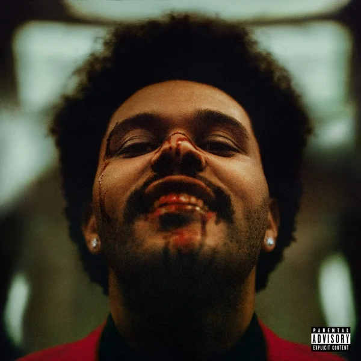
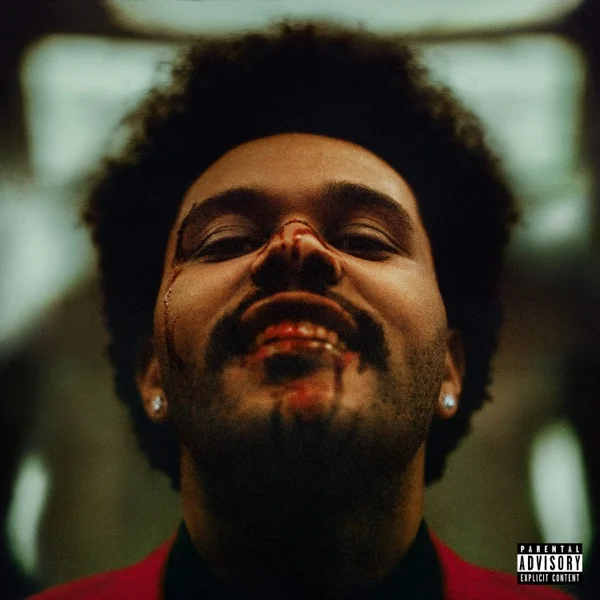

POPCORN&WATCH
Best Songs from THE WEEKND:
The Weeknd (Abel Tesfaye) is one of the elite music artist of industry. He has been ever-popular through his risque style of music and his facial hair experiments(:o). Abel released his first music way back in 2011 in the form of mixtape. 'House of Balloons' (HoB) contained 30 audio tracks featuring Abel himself & few other music artists. It was released online & could be downloaded for free. The critical response for the mixtape was hugely positive and people recognized him as a top talent in R&B genre.
Since then, Abel has signed with Republic Records and started his own 'XO' label. He released his first album 'Kissland' in 2013. 'Beauty Behind Maddness' (BBM,for easiness) followed in 2015 and it was a commercial success.'Can\'t Feel My Face' from the album was at peak of Billboard 100 music charts. Abel won 'Best Urban Contemporary Album' Grammy and also won for his song 'Best R&B Performance' for 'Earned It'.
1. High For This
The first ever song from The Weeknd's mixtape, it introduced listeners to his grim world. The song set a precedent for the whole album. The song is Abel's best ones.
2. Wicked Games
Like 'High For This', 'Wicked Games' is also an early product from HoB which resonated with the audience and brought The Weeknd into the limelight. It was one of the most popular songs form HoB.It was even included in the soundtrack of Southpaw (2015) along with the songs from legends like Eminem, The Notorious B.I.G, Busta Rhymes etc.
3. Earned It
'Earned It' from Abel's 'Beauty Behind Maddness' is his Grammy winning song for 'Best R&B Performance'. The song was also featured in the motion picture 'Fifty Shades of Grey'. The music video has over 570 million views on The Weeknd's YouTube channel.
4. Can't Feel My Face
Another song from The Weeknd's 2015 album, "Can't Feel My Face" was released as a single prior to album release. The song garnered positive response from fans and critics and even made it to the top of Billboard 100 chart. The official music video on YouTube has crossed 1 billion view mark.
5. Starboy
Taken from The Weeknd's 2016 album of same name, 'Starboy' is the song that cemented his position as the top artist of music industry. It was a viral hit and amassed huge streaming requests & downloads. So much was the popularity of the song that it rapidly became Abel's most viewed video on YouTube with more than 1.6 billion views!!
6. The Hills
Another hit from BBM, 'The Hills' is an high octane music fileed with an amazing bass drop & a cool music video. This song was well-received by the listeners and it was hugely popular. The official music video of 'The Hills' has over 1.4 billion views on YouTube.
7. Call Out My Name
It is the first song from The Weeknd's 2018 EP 'My Dear Melancholy' and an assortment of his ill-feelings after his breakup.
Alegeddly written for his ex - Selena Gomez - the music video is a visual treat with varying landscape shots and Abel roaming in them singing. The official music video has over 500 million views on YouTube.
8. I Feel It Coming
Pairing up with the Grammy-winning French electronic pop duo Daft Punk, The Weeknd crafted an 80s resemblimg club banger 'I Feel It Coming'. After the release of the song, people started comparing him to Michael Jackson.The official music video has over 670 million views on YouTube.
9. Blinding Lights
Returning in 2020 with a full length album, The Weeknd introduced audience to his 80s vibes with the catchy 'Blinding Lights'. The song suspectly masks Abel's mental health that has declined through his years with money, fame and heartbreaks .The official music audio has over 100 million views on YouTube. The song is currently at the top of Billboard 100 charts.
Like these songs mentioned above, there are numerous other by The Weeknd which are gems in their own right. Although, it is not possible to list them in as detailed manner as given, but below are links to the official music videos & audios of some of these gems:
There are many of the songs that can't be listed all at once. Thus you can listen to full length albums on Spotify by using below links :
 
